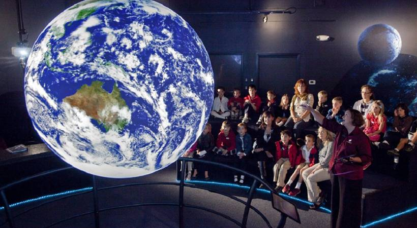

The Earth and Space Foundation
The community that focuses its efforts on the exploration of space has largely been different from the community focused on the study and protection of the Earth's environment, despite the fact that both fields of interest involve what might be referred to as "scientific exploration'. The reason for this dichotomous existence is chiefly historical. The exploration of the Earth has been occurring over many centuries, and the institutions created to do it are often very different from those founded in the second part of the 20th century to explore space. This separation is also caused by the fact that space exploration has attracted experts from mainly non-biological disciplines - primarily engineers and physicists - but the study of Earth and its environment is a domain heavily populated by biologists.
The separation between the two communities is often reflected in attitudes. In the environmental community, it is not uncommon for space exploration to be regarded as a waste of money, distracting governments from solving major environmental problems here at home. In the space exploration community, it is not uncommon for environmentalists to be regarded as introspective people who divert attention from the more expansive visions of the exploration of space - the ‘new frontier’. These perceptions can also be negative in consequence because the full potential of both communities can be realised better when they work together to solve problems. For example, those involved in space exploration can provide the satellites to monitor the Earth’s fragile environments, and environmentalists can provide information on the survival of life in extreme environments.
In the sense that Earth and space exploration both stem from the same human drive to understand our environment and our place within it, there is no reason for the split to exist. A more accurate view of Earth and space exploration is to see them as a continuum of exploration with many interconnected and mutually beneficial links. The Earth and Space Foundation, a registered charity, was established for the purposes of fostering such links through field research and by direct practical action.
Projects that have been supported by the Foundation include environmental projects using technologies resulting from space exploration: satellite communications, GPS, remote sensing, advanced materials and power sources. For example, in places where people are faced with destruction of the forests on which their livelihood depends, rather than rejecting economic progress and trying to save the forests on their intrinsic merit, another approach is to enhance the value of the forests - although these schemes must be carefully assessed to be successful. In the past, the Foundation provided a grant to a group of expeditions that used remote sensing to plan eco-tourism routes in the forests of Guatemala, thus providing capital to the local communities through the tourist trade. This novel approach is now making the protection of the forests a sensible economic decision.
The Foundation funds expeditions making astronomical observations from remote, difficult-to-access Earth locations, archaeological field projects studying the development of early civilisations that made significant contributions to astronomy and space sciences, and field expeditions studying the way in which views of the astronomical environment shaped the nature of past civilisations. A part of Syria - ‘the Fertile Crescent’ - was the birthplace of astronomy, accountancy, animal domestication and many other fundamental developments of human civilisation. The Foundation helped fund a large archaeology project by the Society for Syrian Archaeology at the University of California, Los Angeles, in collaboration with the Syrian government that used GPS and satellite imagery to locate mounds, or ’tels’, containing artefacts and remnants of early civilisations. These collections are being used to build a better picture of the nature of the civilisations that gave birth to astronomy.
Field research also applies the Earth’s environmental and biological resources to the human exploration and settlement of space. This may include the use of remote environments on Earth, as well as physiological and psychological studies in harsh environments. In one research project, the Foundation provided a grant to an international caving expedition to study the psychology of explorers subjected to long-term isolation in caves in Mexico. The psychometric tests on the cavers were used to enhance US astronaut selection criteria by the NASA Johnson Space Center.
Space-like environments on Earth help us understand how to operate in the space environment or help us characterise extraterrestrial environments for future scientific research. In the Arctic, a 24-kilometrewide impact crater formed by an asteroid or comet 23 million years ago has become home tc a Mars- analogue programme. The Foundation helped fund the NASA Haughton-Mars Project to use this crater to test communications and exploration technologies in preparation for the human exploration of Mars. The crater, which sits in high Arctic permafrost, provides an excellent replica of the physical processes occurring on Mars, a permafrosted, impact-altered planet. Geologists and biologists can work at the site to help understand how impact craters shape the geological characteristics and possibly biological potential of Mars.
In addition to its fieldwork and scientific activities. the Foundation has award programmes. These include a series of awards for the future human exploration of Mars, a location with a diverse set of exploration challenges. The awards will honour a number of ‘firsts’ on Mars that include landing on the surface, undertaking an overland expedition to the Martian South Pole, undertaking an overland expedition to the Martian North Pole, climbing Olympus Mons, the highest mountain in the solar system, and descending to the bottom of Valles Marineris, the deepest canyon on Mars. The Foundation will offer awards for expeditions further out in the solar system once these Mars awards have been claimed. Together, they demonstrate that the programme really has no boundary in what it could eventually support, and they provide longevity for the objectives of the Foundation.
Questions 1-5
Do the following statements agree with the views of the writer in the reading passage?
Write
YES if the statement agrees with the views of the writer
NO if the statement contradicts the views of the writer
NOT GIVEN if it is impossible to say what the writer thinks about this
1 Activities related to environmental protection and space exploration have a common theme.
2 It is unclear why space exploration evolved in a different way from environmental studies on Earth.
3 Governments tend to allocate more money to environmental projects than space exploration.
4 Unfortunately, the environmental and space exploration communities have little to offer each other in terms of resources.
5 The Earth and Space Foundation was set up later than it was originally intended.
Questions 6-9
Choose the correct letter, A, B, C or D.
6 What was the significance of the ’novel approach' adopted in the Guatemala project?
A It minimised the need to protect the forests.
B It reduced the impact of tourists on the forests.
C It showed that preserving the forests can be profitable.
D It gave the Foundation greater control over the forests.
7 GPS and satellite imagery were used in the Syrian project to
A help archaeologists find ancient items.
B explore land that is hard to reach.
C reduce the impact of archaeological activity.
D evaluate some early astronomical theories.
8 One of the purposes of the Foundation’s awards is to
A attract non-scientists to its work.
B establish priorities for Mars exploration.
C offer financial incentives for space exploration.
D establish the long-term continuity of its activities.
9 What is the writer’s purpose in the passage?
A to persuade people to support the Foundation
B to explain the nature of the Foundation’s work
C to show how views on the Foundation have changed
D to reject earlier criticisms of the Foundation’s work
Questions 10-14
Complete the summary using the words, A-l, below.
Field research: Applying the Earth's environment to the settlement of space Some studies have looked at how humans function in 10 situations.
In one project, it was decided to review cave explorers in Mexico who tolerate 11 periods on their own.
It is also possible to prepare for space exploration by studying environments on Earth that are 12 to those on Mars.
A huge crater in the Arctic is the 13 place to test the technologies needed to explore Mars and gather other relevant 14 information.
|
A comparable |
D |
ideal |
G |
scientific |
|
B extreme |
E |
unexpected |
H |
extended |
|
C connected |
F |
beneficial |
I |
individual |
---End of the Test---
Please Submit to view your score, solution and explanations.